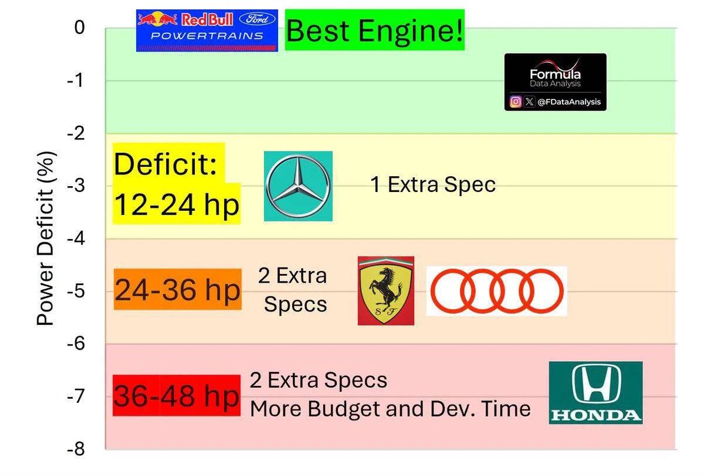

Όταν ο “νέος” κατασκευαστής γίνεται το σημείο αναφοράς
Υπάρχουν στιγμές στη Formula 1 που ένα γράφημα λέει περισσότερα από ένα δελτίο Τύπου. Και το συγκεκριμένο γράφημα, που κυκλοφόρησε τις τελευταίες ημέρες γύρω από την πρώτη αξιολόγηση των power units του 2026, έχει ακριβώς αυτόν τον χαρακτήρα: παρουσιάζει τη Red Bull-Ford Powertrains ως το καλύτερο πακέτο κινητήρα, με τη Mercedes, τη Ferrari, την Audi και τη Honda να βρίσκονται πίσω σε διαφορετικές ζώνες απόδοσης.
Αν το δούμε επιφανειακά, μοιάζει σχεδόν απίστευτο. Η Red Bull, μια ομάδα που για πρώτη φορά στην ιστορία της κατασκευάζει δική της μονάδα ισχύος μέσω της Red Bull Powertrains σε συνεργασία με τη Ford, εμφανίζεται όχι απλώς ανταγωνιστική, αλλά σημείο αναφοράς. Απέναντί της δεν βρίσκονται μικροί παίκτες. Βρίσκονται η Mercedes, η Ferrari, η Honda και η Audi. Δηλαδή εταιρείες με τεράστια μηχανολογική κληρονομιά, εργοστασιακές δομές, ιστορία στους υβριδικούς κινητήρες ή εμπειρία από παγκόσμια αγωνιστικά προγράμματα.
Κι όμως, με βάση τα τελευταία δημοσιεύματα γύρω από το ADUO, η Red Bull-Ford φέρεται να έχει αξιολογηθεί ως το benchmark της πρώτης φάσης των power units του 2026. Το Sky Sports μετέδωσε ότι η FIA έκρινε τη Red Bull ως την καλύτερη μονάδα ισχύος στο πλαίσιο του ADUO, ενώ Mercedes και Ferrari πήραν δικαίωμα αναβάθμισης μέσα στη σεζόν. Το ίδιο πλαίσιο επιβεβαιώνεται και από άλλα διεθνή μέσα, με το PlanetF1 να αναφέρει ότι η Red Bull Powertrains DM01 έχει καταγραφεί ως η μονάδα αναφοράς στην ανάλυση απόδοσης του ADUO.
Και εδώ αρχίζει το πραγματικά ενδιαφέρον κομμάτι. Γιατί αυτό δεν είναι απλώς μια ιστορία «ποιος έχει τον καλύτερο κινητήρα». Είναι μια ιστορία για το πώς η Formula 1 του 2026 προσπαθεί να αποφύγει μια νέα εποχή απόλυτης κυριαρχίας, όπως έγινε το 2014 με τη Mercedes. Αυτή τη φορά, η FIA δεν περιμένει να περάσουν χρόνια για να δει αν κάποιος έχει ξεφύγει. Έχει ήδη δημιουργήσει έναν μηχανισμό διόρθωσης: το ADUO.

Τι είναι το ADUO και γιατί έχει τόση σημασία
Το ADUO σημαίνει Additional Development and Upgrade Opportunities. Με απλά λόγια, είναι ένας μηχανισμός που επιτρέπει σε κατασκευαστές κινητήρων που βρίσκονται πίσω από το benchmark να ανοίξουν ξανά συγκεκριμένες περιοχές εξέλιξης της μονάδας ισχύος, ώστε να μειώσουν τη διαφορά. Δεν είναι Balance of Performance όπως στο WEC. Δεν σημαίνει ότι η FIA βάζει βάρος στον πρώτο ή δίνει τεχνητή ισχύ στον τελευταίο. Είναι περισσότερο μια ελεγχόμενη «βαλβίδα ασφαλείας» για να μη μείνει ένας κατασκευαστής κλειδωμένος σε λάθος αρχιτεκτονική για ολόκληρη τη νέα εποχή.
Το Sky Sports αναφέρει ότι το ADUO εστιάζει κυρίως στο μη ηλεκτρικό μισό της μονάδας ισχύος, δηλαδή στον θερμικό κινητήρα εσωτερικής καύσης. Η FIA αξιολογεί την απόδοση σε κάθε αγώνα μέσω ενός εσωτερικού performance index που δεν είναι διαθέσιμο στα media και λαμβάνει υπόψη παράγοντες όπως torque στον input shaft, στροφές κινητήρα, ισχύ MGU-K και συντελεστή ευαισθησίας της ισχύος στον χρόνο γύρου. Κατασκευαστές που είναι τουλάχιστον 2% πίσω από το κορυφαίο ICE αποκτούν δικαίωμα επιπλέον εξέλιξης. Αν η διαφορά είναι 2–4%, παίρνουν μία ευκαιρία εξέλιξης μέσα στο 2026 και μία ακόμα το 2027. Αν η διαφορά είναι πάνω από 4%, παίρνουν δύο ευκαιρίες το 2026 και δύο επιπλέον το 2027.
Αυτό είναι τεράστια αλλαγή φιλοσοφίας. Στην παλιά Formula 1, αν έχανες την πρώτη ανάγνωση ενός νέου κανονιστικού κύκλου, μπορούσες να μείνεις πίσω για χρόνια. Το 2026, η FIA δείχνει ότι θέλει να κρατήσει τους κατασκευαστές μέσα στο παιχνίδι. Όχι απαραίτητα να τους κάνει ίσους, αλλά να τους δώσει τη δυνατότητα να διορθώσουν.
Και το πρώτο μεγάλο αποτέλεσμα αυτού του συστήματος είναι το εξής: η Red Bull-Ford φέρεται να είναι το σημείο μηδέν. Όλοι οι άλλοι κοιτάζουν προς αυτήν.
Γιατί είναι τόσο εντυπωσιακό το προβάδισμα της Red Bull-Ford
Η Red Bull δεν ήταν ιστορικός κατασκευαστής κινητήρων. Δεν είχε τη δική της παράδοση στη μηχανολογία power units όπως η Mercedes ή η Ferrari. Για χρόνια εξαρτιόταν από Renault, Honda ή άλλα συνεργατικά μοντέλα. Η απόφαση να δημιουργήσει τη Red Bull Powertrains ήταν στρατηγικό στοίχημα τεράστιου ρίσκου. Αν πετύχαινε, η ομάδα θα αποκτούσε πλήρη έλεγχο πάνω στο σημαντικότερο κομμάτι της νέας εποχής: την ενοποίηση chassis, power unit, ψύξης, αεροδυναμικής και ενεργειακής διαχείρισης. Αν αποτύγχανε, θα μπορούσε να χάσει μια ολόκληρη γενιά κανονισμών.
Το ότι το project εμφανίζεται τώρα στην κορυφή της πρώτης ADUO αξιολόγησης είναι κάτι παραπάνω από τεχνική επιτυχία. Είναι πολιτική και στρατηγική δικαίωση. Η Red Bull δεν θέλησε απλώς έναν κινητήρα. Θέλησε έναν κινητήρα φτιαγμένο γύρω από τον τρόπο που εκείνη καταλαβαίνει το μονοθέσιο. Όχι μια μονάδα ισχύος που προσαρμόζεται εκ των υστέρων στο chassis, αλλά ένα power unit που σχεδιάζεται παράλληλα με τη συνολική φιλοσοφία του αυτοκινήτου.
Αυτό έχει ιδιαίτερη σημασία στο 2026. Με την κατάργηση του MGU-H, με την αύξηση της ηλεκτρικής συμμετοχής, με το active aero και με τη νέα σημασία της θερμικής διαχείρισης, το power unit δεν είναι πια απλώς πηγή ισχύος. Είναι κομμάτι του συνολικού οικοσυστήματος του μονοθεσίου. Αν η Red Bull-Ford κατάφερε να χτίσει έναν θερμικό κινητήρα που συνεργάζεται καλύτερα με την μπαταρία, το MGU-K, την ψύξη και την αεροδυναμική αποδοτικότητα, τότε το πλεονέκτημά της δεν είναι μόνο σε ίππους. Είναι σε λειτουργία.
Και αυτό είναι πολύ πιο επικίνδυνο για τους αντιπάλους.
Mercedes: δεύτερη ή ακόμα το πραγματικό μέτρο σύγκρισης;
Το πιο περίεργο σημείο της υπόθεσης είναι η Mercedes. Μέχρι πριν από λίγο καιρό, το paddock θεωρούσε σχεδόν δεδομένο ότι η Mercedes θα ήταν το μεγάλο φαβορί στους κινητήρες του 2026. Η Brixworth είχε την ιστορία, την εμπειρία, την τεχνογνωσία και την επιτυχία της υβριδικής εποχής. Το 2014 δεν κέρδισε απλώς. Έγραψε το βιβλίο.
Όμως το ADUO φαίνεται να λέει κάτι διαφορετικό. Με βάση τα δημοσιεύματα, η Mercedes δεν είναι το benchmark. Είναι πίσω από τη Red Bull-Ford και γι’ αυτό αποκτά δικαίωμα αναβάθμισης. Το Sky αναφέρει ότι η Mercedes και η Ferrari πήραν engine upgrades επειδή η Red Bull κρίθηκε ως καλύτερη μονάδα, ενώ άλλα ρεπορτάζ τοποθετούν τη Mercedes στη ζώνη του 2–4% πίσω από το benchmark.
Αυτό όμως δεν σημαίνει ότι η Mercedes είναι αδύναμη. Αντιθέτως, μπορεί να είναι το πιο επικίνδυνο σενάριο για τη Red Bull. Αν η Mercedes είναι κοντά, αλλά αποκτά επιπλέον development allowance, τότε έχει την ευκαιρία να διορθώσει σχετικά μικρή διαφορά με τη μεγαλύτερη ίσως οργανωτική εμπειρία στο grid σε υβριδικούς κινητήρες.
Εδώ κρύβεται η ειρωνεία του ADUO. Ο πρώτος δεν μπορεί να ανοίξει τόσο εύκολα τον κινητήρα του. Οι πίσω μπορούν. Άρα το να είσαι benchmark είναι τιμή, αλλά και παγίδα. Η Red Bull κερδίζει την πρώτη μάχη, αλλά οι υπόλοιποι παίρνουν το δικαίωμα να την κυνηγήσουν.
Η Mercedes, λοιπόν, μπορεί να έχασε τον τίτλο του σημείου αναφοράς. Δεν έχασε όμως τον πόλεμο.
Ferrari: το πρόβλημα δεν είναι μόνο η ισχύς, είναι το παράθυρο εξέλιξης
Για τη Ferrari, η εικόνα είναι πιο σύνθετη. Το γράφημα την τοποθετεί σε ζώνη περίπου 4–6% πίσω, δηλαδή σε περιοχή που θα απαιτούσε δύο extra specs. Τα διεθνή ρεπορτάζ συμφωνούν γενικά ότι η Ferrari είναι πίσω από Red Bull-Ford και Mercedes, με δικαίωμα επιπλέον εξέλιξης. Το PlanetF1 αναφέρει ότι Ferrari, Audi και Honda βρίσκονται στο πίσω group και ότι η Ferrari μαζί με Audi και Honda αναμένεται να πάρουν δύο upgrade opportunities, ενώ το Sky επιβεβαιώνει ότι η Ferrari έχει πάρει δικαίωμα αναβάθμισης.
Το ερώτημα για τη Ferrari δεν είναι μόνο αν λείπουν 20 ή 30 ίπποι. Αυτά τα νούμερα είναι πάντα επικίνδυνα, γιατί εξαρτώνται από το αν μιλάμε για θερμικό κινητήρα, συνολικό power unit, ηλεκτρικό deployment, αξιοπιστία ή πραγματική απόδοση στον γύρο. Το βαθύτερο ερώτημα είναι αν η Ferrari έχει σωστή αρχιτεκτονική για να εξελιχθεί.
Αν το έλλειμμα είναι θέμα καύσης, θερμικής απόδοσης ή turbo efficiency, τότε μπορεί να διορθωθεί με targeted upgrades. Αν όμως το πρόβλημα είναι βαθύτερο, δηλαδή packaging, ψύξη, energy deployment ή συνεργασία με το chassis, τότε το ADUO βοηθά αλλά δεν σώζει από μόνο του.
Η Ferrari ιστορικά είχε στιγμές όπου η ισχύς ήταν υψηλή αλλά η συνολική εκμετάλλευση δεν ήταν ιδανική. Το 2026 αυτό μπορεί να πληγωθεί ακόμα περισσότερο. Δεν αρκεί να βρεις ίππους. Πρέπει να τους χρησιμοποιήσεις χωρίς να καταστρέψεις θερμοκρασίες, ελαστικά και ενεργειακή οικονομία. Η νέα Formula 1 δεν τιμωρεί μόνο τον αδύναμο κινητήρα. Τιμωρεί τον κινητήρα που δεν συνεργάζεται με το υπόλοιπο μονοθέσιο.
Και εκεί η Ferrari πρέπει να αποδείξει ότι η εξέλιξη που θα πάρει μέσω ADUO δεν θα είναι απλώς αύξηση ισχύος, αλλά βελτίωση συνολικής λειτουργίας.
Audi: το λογικό τίμημα του πρώτου βήματος
Η Audi βρίσκεται σε μια τελείως διαφορετική θέση. Για εκείνη, το 2026 είναι η πρώτη πραγματική είσοδος στη Formula 1 ως εργοστασιακή ομάδα και κατασκευαστής power unit. Ναι, έχει τεράστια εμπειρία σε αγωνιστικά προγράμματα, υβριδική τεχνολογία, Le Mans και high-performance engineering. Αλλά η Formula 1 έχει δικό της ρυθμό, δική της βαρβαρότητα και δικά της μικροσκοπικά περιθώρια λάθους.
Το ότι η Audi βρίσκεται πίσω από το benchmark δεν είναι έκπληξη. Θα ήταν σχεδόν μεγαλύτερη έκπληξη αν ήταν αμέσως μπροστά. Το PlanetF1 αναφέρει ότι η Audi επιβεβαίωσε πως έχει τουλάχιστον μία ADUO allowance και παραδέχθηκε ότι τα δικά της δεδομένα έδειχναν πως το μεγάλο gap βρίσκεται στον κινητήρα, όχι τόσο στο chassis της R26.
Αυτό είναι σημαντικό, γιατί δείχνει πως η Audi δεν κρύβεται πίσω από γενικότητες. Αν το chassis έχει βάση, αλλά ο κινητήρας είναι πίσω, τότε το ADUO της δίνει μια σχετικά καθαρή κατεύθυνση. Βελτίωση θερμικού κινητήρα, αξιοπιστία, διαχείριση θερμοκρασιών, καλύτερη απόδοση στο εύρος στροφών και πιθανώς πιο καθαρή συνεργασία με το ηλεκτρικό σκέλος.
Για την Audi, το 2026 ίσως δεν είναι χρονιά τίτλου. Είναι χρονιά επιβίωσης και μάθησης. Το ADUO μπορεί να γίνει το εργαλείο που θα της επιτρέψει να μη χαθεί πριν καν προλάβει να χτίσει αγωνιστική ταυτότητα.
Honda: από κυρίαρχη με τη Red Bull σε δύσκολη αρχή με την Aston Martin
Η πιο δύσκολη ιστορία είναι ίσως της Honda. Η Honda έφυγε από τη συνεργασία με τη Red Bull ως ο κατασκευαστής που βοήθησε τον Verstappen και την ομάδα να χτίσουν την τελευταία μεγάλη τους εποχή επιτυχίας. Το power unit της προηγούμενης γενιάς ήταν δυνατό, αξιόπιστο και πλήρως ενσωματωμένο στο πακέτο της Red Bull.
Το 2026 όμως είναι νέο παιχνίδι. Η Honda επιστρέφει ως πλήρης κατασκευαστής με την Aston Martin, και τα πρώτα σημάδια δεν είναι καλά. Το Reuters έγραψε ήδη από τα μέσα Μαΐου ότι η Honda, ως προμηθευτής της Aston Martin, θα μπορούσε να πάρει έως 19 εκατομμύρια δολάρια επιπλέον δυνατότητας εξέλιξης μέσω ADUO, επειδή η μονάδα ισχύος της υστερεί σημαντικά. Το ίδιο ρεπορτάζ σημείωσε ότι η Aston Martin είχε προβλήματα αξιοπιστίας και κραδασμών, ενώ στο Miami ήταν η πρώτη φορά μέσα στο 2026 που και τα δύο μονοθέσια της ομάδας τερμάτισαν.
Αν αυτό συνδυαστεί με το γράφημα, που τοποθετεί τη Honda στη βαθύτερη ζώνη ελλείμματος, το συμπέρασμα είναι ξεκάθαρο: η Honda είναι αυτή που χρειάζεται περισσότερο το ADUO. Όχι επειδή δεν έχει τεχνογνωσία, αλλά επειδή η νέα φόρμουλα ισχύος φαίνεται να μην έχει κουμπώσει ακόμη σωστά με τις απαιτήσεις της Aston Martin.
Και εδώ υπάρχει ένα τεράστιο ψυχολογικό βάρος. Η Aston Martin επένδυσε στη Honda για να αποκτήσει εργοστασιακή ταυτότητα. Ο Fernando Alonso και η ομάδα ήλπιζαν ότι το 2026 θα ήταν το μεγάλο reset. Αν όμως το power unit ξεκινά τόσο πίσω, τότε το project χρειάζεται όχι απλώς αναβάθμιση, αλλά αναδόμηση εμπιστοσύνης.
Το γράφημα είναι σωστό ή υπερβολικό;
Το γράφημα που βλέπουμε είναι χρήσιμο ως εικόνα της τάσης, αλλά δεν πρέπει να διαβαστεί σαν επίσημο δυναμομετρικό έγγραφο. Τα ποσοστά και οι ίπποι που εμφανίζονται —12–24 hp, 24–36 hp, 36–48 hp— είναι μια μετάφραση του ποσοστιαίου ελλείμματος σε πιο εύπεπτη μορφή. Όμως η Formula 1 του 2026 δεν μετριέται τόσο απλά.
Πρώτον, το ADUO αφορά κυρίως την απόδοση του ICE, όχι απαραίτητα τη συνολική απόδοση του power unit σε κάθε φάση του γύρου. Δεύτερον, το ηλεκτρικό deployment μπορεί να κρύψει ή να ενισχύσει ένα έλλειμμα θερμικού κινητήρα. Τρίτον, το active aero αλλάζει το πόσο «ακριβή» είναι κάθε μονάδα ισχύος σε χρόνο γύρου. Ένα μονοθέσιο με καλύτερη αεροδυναμική αποδοτικότητα μπορεί να χρειάζεται λιγότερη ισχύ για το ίδιο αποτέλεσμα. Τέταρτον, η αξιοπιστία μπορεί να είναι πιο σημαντική από το peak power. Ένας κινητήρας που έχει θεωρητικά καλή ισχύ αλλά χρειάζεται conservative maps για να τερματίσει δεν είναι πραγματικά δυνατός.
Άρα το σωστό συμπέρασμα δεν είναι «η Red Bull έχει Χ ίππους παραπάνω». Το σωστό συμπέρασμα είναι ότι, με βάση την πρώτη ADUO εικόνα, η Red Bull-Ford έχει αξιολογηθεί ως σημείο αναφοράς και οι υπόλοιποι κατασκευαστές έχουν λάβει ή αναμένεται να λάβουν διαφορετικό επίπεδο δυνατότητας εξέλιξης.
Αυτό είναι πιο σοβαρό από ένα απλό νούμερο.
Γιατί σημαίνει ότι η FIA αναγνωρίζει επίσημα ή ημιεπίσημα μια ιεραρχία απόδοσης.
Η μεγάλη ειρωνεία: ο καλύτερος κινητήρας ίσως χάνει το δικαίωμα να εξελιχθεί
Το πιο συναρπαστικό κομμάτι του ADUO είναι ότι δημιουργεί ένα παράδοξο. Αν είσαι πρώτος, δεν παίρνεις βοήθεια. Αν είσαι πίσω, παίρνεις. Αυτό είναι δίκαιο από πλευράς θεάματος, αλλά περίπλοκο από πλευράς μηχανολογίας.
Η Red Bull-Ford μπορεί να έχει το καλύτερο σημείο εκκίνησης, αλλά οι αντίπαλοι θα έχουν περισσότερα ανοίγματα για να διορθώσουν. Αν η Mercedes είναι κοντά και πάρει μία ευκαιρία εξέλιξης, μπορεί να κλείσει τη διαφορά γρήγορα. Αν η Ferrari, η Audi ή η Honda έχουν δύο ευκαιρίες, μπορούν να κάνουν μεγαλύτερα βήματα, αρκεί να ξέρουν ακριβώς τι πρέπει να διορθώσουν.
Αυτό σημαίνει ότι η μάχη των κινητήρων του 2026 δεν τελείωσε. Μόλις ξεκίνησε.
Το πρώτο benchmark είναι σημαντικό, αλλά όχι τελικό. Θα ακολουθήσουν νέες αξιολογήσεις μετά το Hungaroring και μετά το Mexico City, οι οποίες θα επηρεάσουν και το 2027. Το Sky Sports αναφέρει ότι δύο ακόμη ADUO reviews θα γίνουν αργότερα μέσα στη χρονιά, μετά το ουγγρικό GP και το GP του Mexico City.
Άρα η Red Bull πρέπει να κάνει κάτι πολύ δύσκολο: να κρατήσει προβάδισμα ενώ οι άλλοι θα έχουν περισσότερα εργαλεία για να την κυνηγήσουν.
Τι σημαίνει αυτό για το πρωτάθλημα
Αγωνιστικά, η εικόνα των power units μπορεί να αλλάξει τον τρόπο που βλέπουμε όλη τη σεζόν. Οι ομάδες με Mercedes power unit —Mercedes, McLaren, Williams και Alpine— έχουν ένα πακέτο που παραμένει ισχυρό και πολυπληθές στο grid. Η Ferrari τροφοδοτεί Ferrari, Haas και Cadillac. Η Red Bull-Ford τροφοδοτεί Red Bull και Racing Bulls. Η Honda είναι αποκλειστικά με την Aston Martin, ενώ η Audi έχει το δικό της εργοστασιακό project. Η επίσημη λίστα ομάδων-κινητήρων για το 2026 επιβεβαιώνει αυτόν τον χάρτη προμηθευτών.
Αυτό σημαίνει ότι κάθε κινητήρας δεν επηρεάζει μόνο μία ομάδα. Επηρεάζει ολόκληρα μικρά οικοσυστήματα. Αν η Red Bull-Ford έχει πλεονέκτημα, το απολαμβάνουν Red Bull και Racing Bulls. Αν η Mercedes είναι κοντά, τότε τέσσερις ομάδες μπορούν να χτίσουν πάνω σε αυτό. Αν η Ferrari είναι πίσω, η Haas και η Cadillac πληρώνουν επίσης μέρος της συνέπειας. Αν η Honda δυσκολεύεται, η Aston Martin δεν έχει δεύτερο σημείο αναφοράς από πελατειακή ομάδα. Είναι μόνη της.
Αυτό κάνει το 2026 πολύ πιο πολιτικό και στρατηγικό. Δεν μιλάμε μόνο για εργοστασιακή ισχύ. Μιλάμε για το ποιος έχει δεδομένα από περισσότερα μονοθέσια, ποιος μαθαίνει πιο γρήγορα, ποιος μπορεί να αξιοποιήσει ADUO χωρίς να χαλάσει αξιοπιστία και ποιος μπορεί να μετατρέψει την εξέλιξη σε χρόνο γύρου.
H Red Bull κέρδισε την πρώτη μάχη, όχι τον πόλεμο
Αν η εικόνα που έχουμε ως τις 10 Ιουνίου 2026 είναι σωστή, τότε η Red Bull-Ford έχει πετύχει κάτι που ελάχιστοι περίμεναν: έχει γίνει το πρώτο benchmark της νέας εποχής κινητήρων. Για ένα project που γεννήθηκε από ανάγκη ανεξαρτησίας, αυτό είναι τεράστια δήλωση δύναμης.
Όμως η Formula 1 δεν τελειώνει στην πρώτη αξιολόγηση. Το ADUO υπάρχει ακριβώς για να μη μείνει η πρώτη διαφορά αμετάβλητη. Mercedes, Ferrari, Audi και Honda θα έχουν εργαλεία για να κλείσουν το gap. Κάποιοι θα το κάνουν γρήγορα. Κάποιοι θα χαθούν σε λάθος δρόμο. Κάποιοι θα βρουν ίππους αλλά θα χάσουν αξιοπιστία. Κάποιοι θα βρουν θερμική απόδοση αλλά θα πληρώσουν σε packaging ή ψύξη.
Η μεγάλη μάχη του 2026 δεν είναι απλώς ποιος έχει τον καλύτερο κινητήρα σήμερα.
Είναι ποιος μπορεί να εξελίξει πιο έξυπνα έναν κινητήρα που πλέον δεν είναι απλώς πηγή ισχύος, αλλά μέρος ενός ολοκληρωμένου συστήματος: chassis, active aero, energy deployment, θερμική διαχείριση, καύσιμο, οδηγός.
Το γράφημα λέει «Best Engine: Red Bull Powertrains».
Η πραγματική ιστορία λέει κάτι ακόμα πιο ενδιαφέρον:
Η Red Bull μπορεί να έχτισε την καλύτερη αρχή.
Αλλά τώρα πρέπει να επιβιώσει από την καταδίωξη όλων των άλλων.


Σχόλια